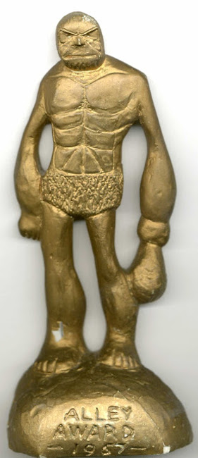

The Alley Award was an American annual series of comic book fan awards, first presented in 1962 for comics published in 1961. Officially organized under the aegis of the Academy of Comic Book Arts and Sciences, the award shared close ties with the fanzine Alter Ego magazine. The Alley is the first known comic book fan award. Hall of Fame:
The Shazam Award from The Academy of Comic Book Arts ran from 1970-1977. Hall of Fame:
The Inkpot Award is an honor bestowed annually since 1974 by Comic-Con International.
The Jack Kirby Award ran from 1985-1987. Hall of Fame:
The Harvey Awards (https://www.harveyawards.com/) by Fantagraphics, still running since 1987. Hall of Fame:
The Will Eisner Awards (https://www.comic-con.org) by the San Diego Comicon, still running since 1988. Hall of Fame:
- 1987 Carl Barks, Will Eisner, Jack Kirby
- 1988 Milton Caniff
- 1989 Harvey Kurtzman
- 1991 Robert Crumb, Alex Toth
- 1992 Joe Shuster, Jerry Siegel, Wally Wood
- 1993 C. C. Beck, William Gaines
- 1994 Steve Ditko, Stan Lee
- 1995 Frank Frazetta, Walt Kelly
- 1996 Hal Foster, Bob Kane, Winsor McCay, Alex Raymond.
- 1997 Gil Kane, Charles M. Schulz, Curt Swan.
- 1998 Neal Adams, Jean Giraud (a.k.a. Moebius), Joe Kubert
- 1999 Jack Cole, L. B. Cole, Mac Raboy, Alex Schomburg, Murphy Anderson, Joe Simon, Art Spiegelman, Dick Sprang.
- 2000 Bill Everett, Sheldon Mayer, George Herriman, Carmine Infantino, Al Williamson, Basil Wolverton
- 2001 Dale Messick, Roy Crane, Chester Gould, Frank King, EC Segar, Marie Severin
- 2002 Charles Biro, Osamu Tezuka, Sergio Aragonés, John Buscema, Dan DeCarlo, John Romita, Sr.
- 2003 Hergé, Bernard Krigstein, Jack Davis, Will Elder, Al Feldstein, John Severin.
- 2004 Otto Binder, John Stanley, Kazuo Koike, Goseki Kojima, Al Capp, Jules Feiffer, Don Martin, Jerry Robinson
- 2005 Lou Fine, René Goscinny and Albert Uderzo, Johnny Craig, Hugo Pratt, Nick Cardy, Gene Colan.
- 2006 Floyd Gottfredson, William Moulton Marston, Vaughn Bodē, Ramona Fradon, Russ Manning, Jim Steranko.
- 2007 Robert Kanigher, Ogden Whitney, Ross Andru & Mike Esposito, Dick Ayers, Wayne Boring, Joe Orlando
- 2008 Richard F. Outcault, Major Malcolm Wheeler-Nicholson, John Broome, Arnold Drake, Len Wein, Barry Windsor-Smith.
- 2009 Harold Gray, Graham Ingels, Matt Baker, Reed Crandall, Russ Heath, Jerry Iger
- 2010 Burne Hogarth, Bob Montana, Steve Gerber, Dick Giordano, Michael Kaluta, Mort Weisinger
- 2011 Ernie Bushmiller, Jack Jackson, Martin Nodell, Lynd Ward, Mort Drucker, Harvey Pekar, Roy Thomas, Marv Wolfman
- 2012 Rudolph Dirks, Harry Lucey, Bill Blackbeard, Richard Corben, Katsuhiro Otomo, Gilbert Shelton.
- 2013 Mort Meskin, Spain Rodriguez, Lee Falk, Al Jaffee, Trina Robbins, Joe Sinnott
- 2014 Irwin Hasen, Sheldon Moldoff, Orrin C. Evans, Hayao Miyazaki, Alan Moore, Dennis O'Neil, Bernie Wrightson.
- 2015 Marge (Marjorie Henderson Buell), Bill Woggon, John Byrne, Chris Claremont, Denis Kitchen, Frank Miller.
- 2016 Carl Burgos, Tove Jansson, Lynda Barry, Rube Goldberg, Matt Groening, Jacques Tardi
- 2017 Milt Gross, H. G. Peter, Antonio Prohías, Dori Seda, Gilbert Hernandez, Jaime Hernandez, George Perez, Walt Simonson, Jim Starlin.
- 2018 Carol Kalish, Jackie Ormes, Charles Addams, Karen Berger, Dave Gibbons, Rumiko Takahashi
- 2019 Jim Aparo, June Tarpé Mills, Dave Stevens, Morrie Turner, José Luis García-López, Jenette Kahn, Paul Levitz, Wendy Pini, Bill Sienkiewicz
- 2020 Nell Brinkley, E. Simms Campbell, Alison Bechdel, Howard Cruse, Louise Simonson, Stan Sakai, Don and Maggie Thompson, Bill Watterson.